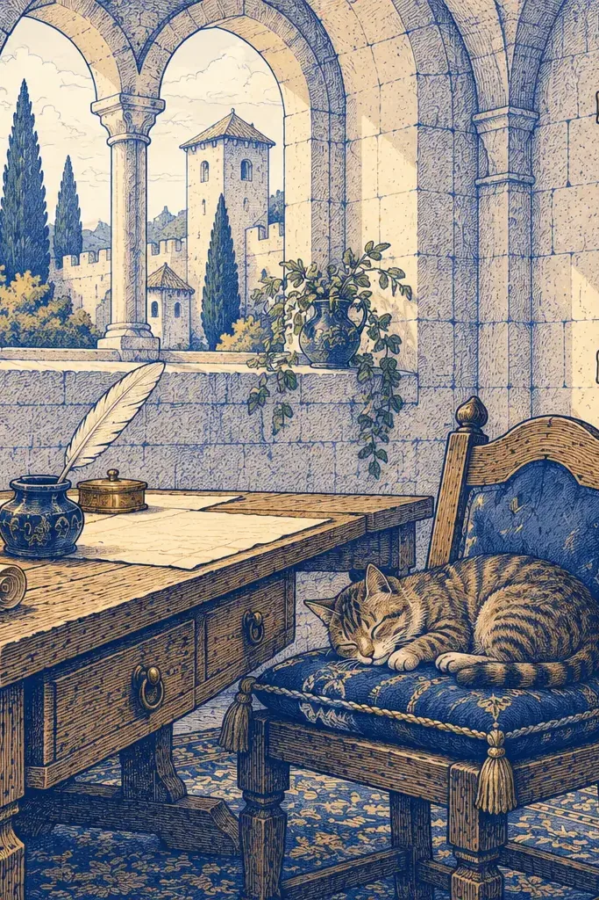
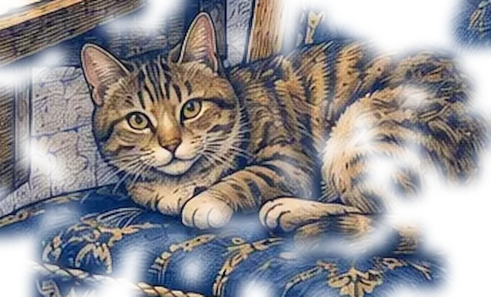

Hof


Мои покои
admin · хозяин двора
Сменить пароль
Текущий пароль
Новый пароль
Ещё раз
Не короче [N] символов. На других устройствах вы выйдете со двора.
Сменить пароль
Звуки и движение
Анимации
знамя, фонтан, ветер, двери, переходы
Звуки
двери, сундук, монеты, кот, вода и ветер
громкость
80 %
Музыка
лютня и старинные напевы
громкость
50 %
Сначала всё выключено. Настройка этого устройства.
Покинуть двор